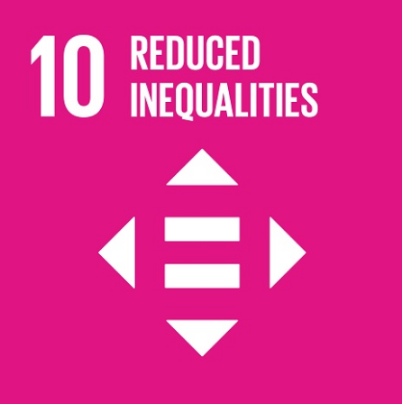
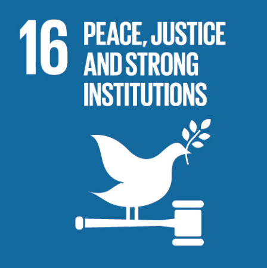
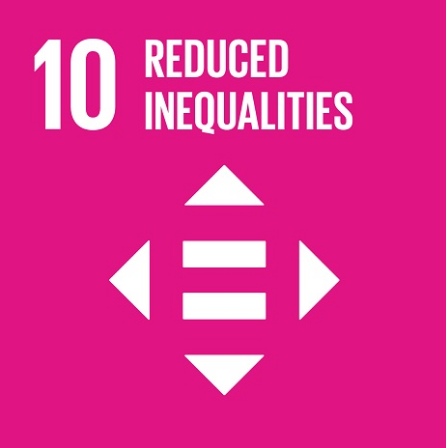
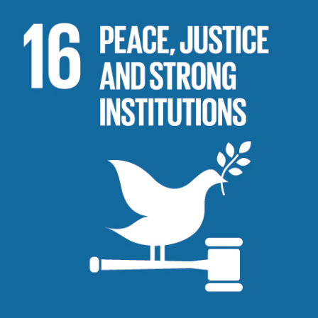

SUSTAINABLE DEVELOPMENT GOALS
 



SDG 2.3: By 2030, double the agricultural productivity and incomes of small-scale food producers, in particular women, indigenous peoples, family farmers, pastoralists and fishers, including through secure and equal access to land, other productive resources and inputs, knowledge, financial services, markets and opportunities for value addition and non-farm employment.
SDG 2.4: By 2030, ensure sustainable food production systems and implement resilient agricultural practices that increase productivity and production, that help maintain ecosystems, that strengthen capacity for adaptation to climate change, extreme weather, drought, flooding and other disasters and that progressively improve land and soil quality.
SDG 5.5: Ensure women’s full and effective participation and equal opportunities forleadership at all levels of decision-making in political, economic and public life.
SDG 10.2: By 2030, empower and promote the social, economic and political inclusion of all, irrespective of age, sex, disability, race, ethnicity, origin, religion or economic or other status.
SDG 10.3: Ensure equal opportunity and reduce inequalities of outcome, including by eliminating discriminatory laws, policies and practices and promoting appropriate legislation, policies and action in this regard.
SDG 16.7: Ensure responsive, inclusive, participatory and representative decision-making at all levels.
Higher Education Leadership Mentoring Seminar
The higher education landscape is rapidly evolving, requiring leaders who can navigate challenges such as technological advancements, globalization, and shifting societal needs. However, many emerging leaders in academia lack access to structured mentoring and professional development opportunities. The Higher Education Leadership Mentoring Seminar (HELMS) is designed to address this gap by providing a platform for emerging leaders to learn from experienced mentors, develop essential leadership skills, and build a network of peers and experts. This seminar will focus on fostering transformative leadership that promotes innovation, inclusivity, and excellence in higher education. Through collaborative efforts with experienced higher education leaders, policymakers, and industry experts, HELMS seeks to empower participants with the knowledge and tools necessary to drive positive change in their institutions. The initiative underscores the belief that effective leadership is critical to the sustainability and growth of academic institutions.
The project aims to:
- Equip emerging leaders with essential leadership skills and strategies for higher education.
- Facilitate mentorship opportunities between experienced leaders and participants.
- Promote best practices in leadership, including strategic planning, change management, and stakeholder engagement.
- Foster a network of professionals committed to advancing higher education.
Contributions to the Sustainable Development Goals
The Higher Education Leadership Mentoring Seminar (HELMS) meaningfully contributed to the achievement of several United Nations Sustainable Development Goals (SDGs), underscoring its commitment to inclusive, quality, and transformative education. Most prominently, the activity aligned with SDG 4: Quality Education by equipping current and emerging academic leaders with critical skills in leadership, strategic planning, and institutional management. These competencies are essential for strengthening educational institutions and improving the delivery of quality education at all levels.
The seminar also promoted SDG 5: Gender Equality by fostering a safe, inclusive environment where equal participation of men and women was encouraged and celebrated. Female leaders were represented among both mentors and participants, contributing to the empowerment of women in leadership roles within the academic sector.
In support of SDG 10: Reduced Inequalities, HELMS created equal opportunities for leaders from diverse institutions—regardless of location, funding level, or institutional status—ensuring that leadership development was accessible and inclusive. This approach helped bridge gaps in professional development and encouraged equitable participation from both public and private educational institutions.
Furthermore, the program contributed to SDG 16: Peace, Justice, and Strong Institutions by promoting transparency, good governance, and ethical leadership. Sessions emphasized integrity, emotional intelligence, and accountability—key principles in building resilient institutions that serve the needs of students and society at large.
Lastly, the seminar reflected the principles of SDG 17: Partnerships for the Goals by engaging experts, mentors, and stakeholders from multiple sectors including academia, government, and private organizations. This collaborative model highlights the importance of cross-sector partnerships in driving sustainable progress and institutional innovation.
Through these contributions, HELMS not only advanced the development of individual leaders but also strengthened the capacity of higher education institution
General Assessment
The Higher Education Leadership Mentoring Seminar was successfully implemented and well-received by the participants. The program’s structure, which combined expert insights, interactive workshops, and mentoring sessions, provided a balanced and engaging learning experience. Participants actively engaged in discussions, shared their experiences, and expressed appreciation for the opportunity to connect with seasoned leaders in the field. The sessions were relevant, timely, and aligned with the goals of leadership development in the higher education sector. Feedback gathered from participants highlighted the effectiveness of the mentoring circles and the value of practical strategies shared during the workshops and panel discussions. The event was well-organized, with smooth facilitation, active participation, and strong logistical support, contributing to the overall success of the seminar.
Recommendations
To further enhance the impact of future leadership seminars, it is recommended to extend the duration of mentoring sessions to allow for deeper engagement and more personalized guidance. Incorporating follow-up activities such as online mentoring, leadership webinars, or progress check-ins can sustain the momentum and ensure continuous learning. It is also suggested to diversify the pool of mentors and speakers to include leaders from various sectors such as government, industry, and international institutions, offering broader perspectives. Lastly, gathering more structured feedback through post-event surveys and reflective reports will help in refining the program design and aligning future activities with participants’ evolving needs and institutional goals